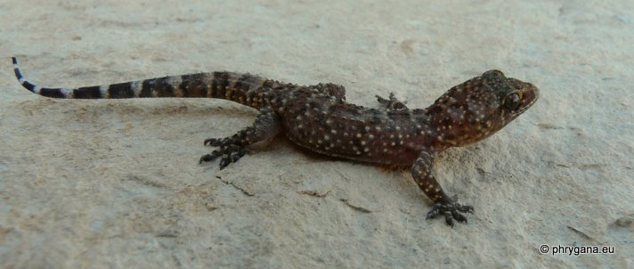
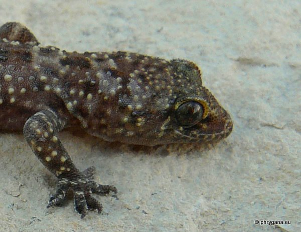
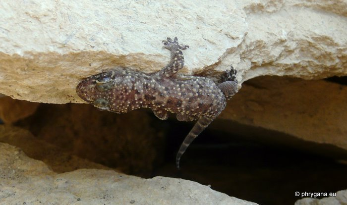

| PHRYGANA | Fauna | Flora | nouveautés | liste des espèces |
contact -
info - commentaires phrygana1 (at) gmail.com |
| Particularités crétoises | Galles et mines | ressources naturelles |
| Hemidactylus turcicus (Linnaeus 1758) |
| 313 | Fauna | REPTILIA | Gekkonidae | Hemidactylus Oken 1817 |
|
 Hemidactylus turcicus Melambes (Agios Giorgos) 19 janvier 2012 |
| en: Turkish Gecko fr: le Gecko turc |
| Grandeur: les adultes peuvent atteindre 8 à 10 cm |
| Identification: corpulence fine; dos et queue couverts de verrues tuberculeuses blanchâtres; pupille verticale; peau plus ou moins translucide rosée, parfois plus foncée (en hiver); dessous des pattes couvert de coussinets adhésifs poilus (excellent grimpeur); queue annelée, de plus en plus marquée vers la fin |
| La femelle pond un à deux oeufs assez gros (9-12 mm x 8-10 mm), ronds, blancs; oeufs placés dans des crevasses, sous la litère ou parfois enterrés; incubation: 6 à 12 semaines; les jeunes ont 4-5 cm à l'éclosion |
| La maturité est atteinte après 6 -8 mois |
| Hemidactylus turcicus est actif surtout au crépuscule et la nuit et vient facilement chasser les insectes jusque sous les éclairages des maisons. En journée, il se cache sous une pierre, dans les anfractuosités de murs, ruines; parfois se réchauffe au soleil en hiver |
| Le mâle a un comportement territorial en saison des amours et émet des chants courts, hachés (tchak-tchack) |
| Statu en Crète: indigène répandu |
| Biotopes en Crète: phrygana, plaines littorales, vallées humides, alentours des habitations, petits villages |
| Altitudes: 0 - 300 (-500) m |
| Distribution: Europe méridionale côtière, Afrique du Nord, introduit aux Etats-Unis |
| Menaces: le chat domestique, l'homme en détruisant son habitat |
| Utilité: précieux auxiliaire de l'homme: insectivore vorace |
|
 Hemidactylus turcicus Melambes (Agios Giorgos) 19 janvier 2012 |
|
 Hemidactylus turcicus Melambes (Agios Giorgos) 19 janvier 2012 |
| 25 janvier 2012 |
| © paul fontaine -- © Phrygana.eu 2007 -- 2013 |